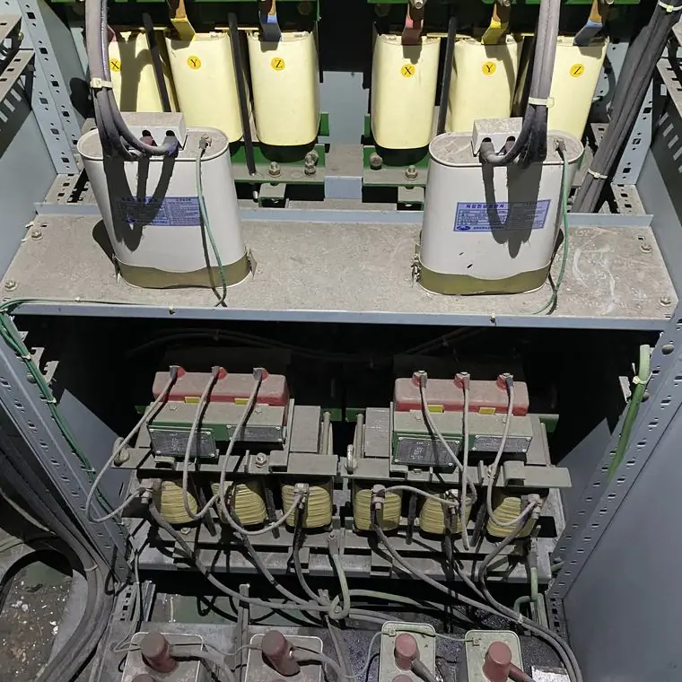
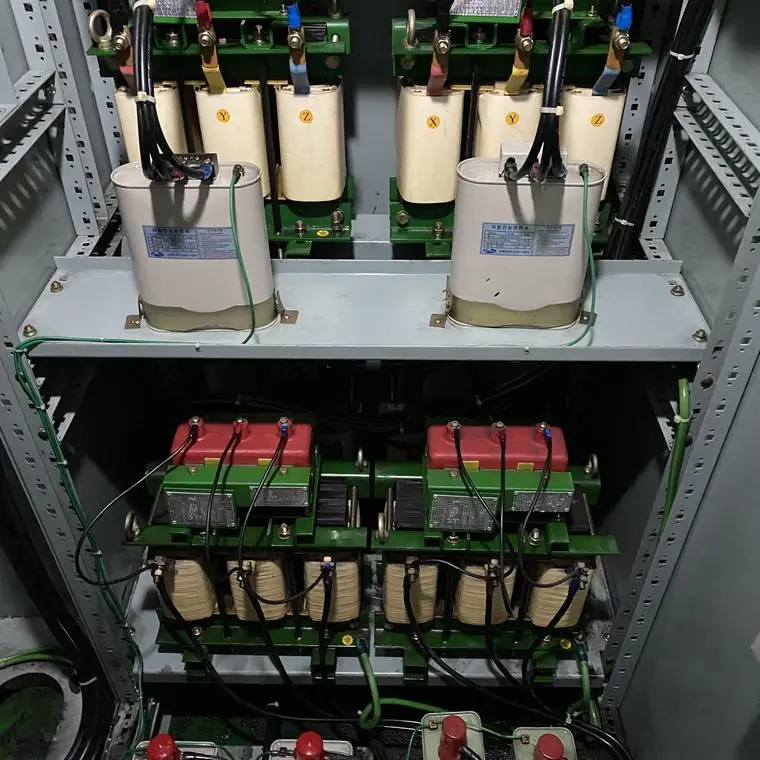

전기설비에 분진과 습기가 쌓이면 어떤 문제가 생기나요?
최종 수정 2026-10-25
전기설비 안에 쌓인 미세 분진과 습기는 절연 불량, 접촉 불량, 부식과 오작동, 발열과 화재 위험의 원인이 될 수 있습니다. 눈에 보이지 않는 틈에 쌓이기 때문에 정기적인 점검과 청소로 관리하는 것이 좋습니다.
1. 절연 불량
분진과 습기가 쌓이면 누설전류가 늘고 절연 성능이 떨어질 수 있습니다.
작업 전

작업 후

2. 접촉 불량
접점, 릴레이, 커넥터에 먼지가 끼면 열화가 생기고 접촉이 불안정해질 수 있습니다.
3. 부식과 오작동
금속성 먼지와 습기가 만나면 누전, 합선, 부식으로 이어질 수 있고, 오작동과 정전의 원인이 될 수 있습니다.
4. 발열과 화재 위험
정전기, 스파크, 먼지가 겹치면 발열과 착화 위험이 커질 수 있습니다. 변압기 사례에서는 세척 후 표면 온도가 낮아진 측정 결과가 공개되어 있습니다.
어떻게 관리하나요?
- 정기 점검 때 내부 먼지와 습기, 곰팡이, 부식 흔적을 확인합니다.
- 환기와 습도 관리를 점검합니다.
- 오염이 쌓였다면 전문 업체의 세척을 검토합니다.
전기설비를 직접 물이나 일반 세제로 청소하는 것은 감전·단락 위험이 있어 권하지 않습니다. 반드시 전문 업체와 전기안전관리자에게 먼저 확인하세요.
자주 묻는 질문
분진이 쌓이면 꼭 사고가 나나요?
그렇지 않습니다. 다만 절연 저하, 접촉 불량, 발열 같은 문제의 원인이 될 수 있어 관리가 필요합니다.
눈에 보이지 않아도 청소가 필요한가요?
미세 분진은 틈과 내부에 쌓이므로, 점검 때 내부 상태를 확인하고 필요하면 청소를 검토하세요.
설비 사진과 정보를 남기시면 확인 후 견적을 안내해 드립니다.
무료 견적 문의하기이 글은 시공 업체가 공개한 자료와 일반적인 전기설비 관리 상식을 바탕으로 작성했습니다. 설비별 적용 여부와 결과는 현장 확인 후 달라질 수 있습니다.